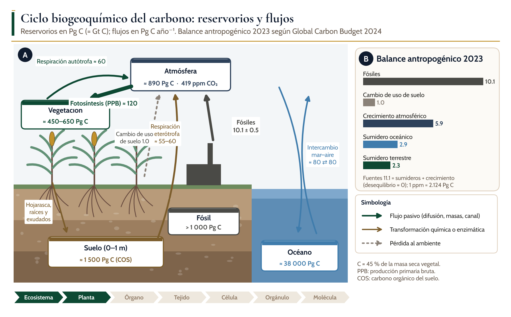
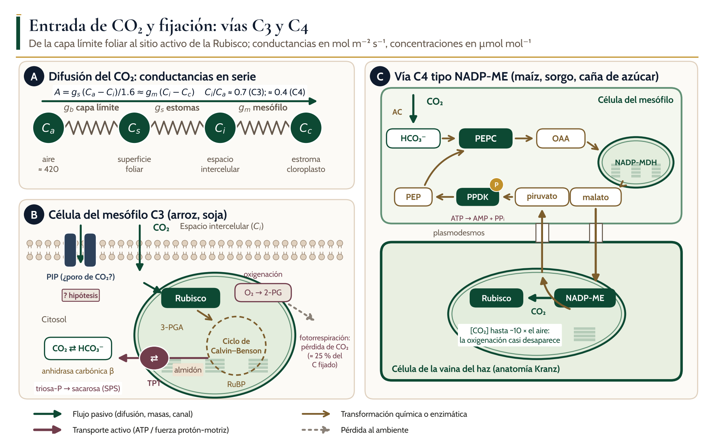
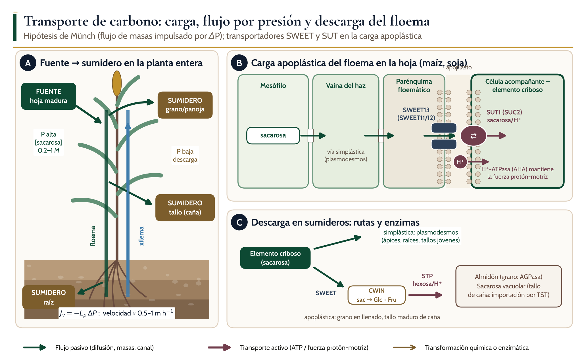
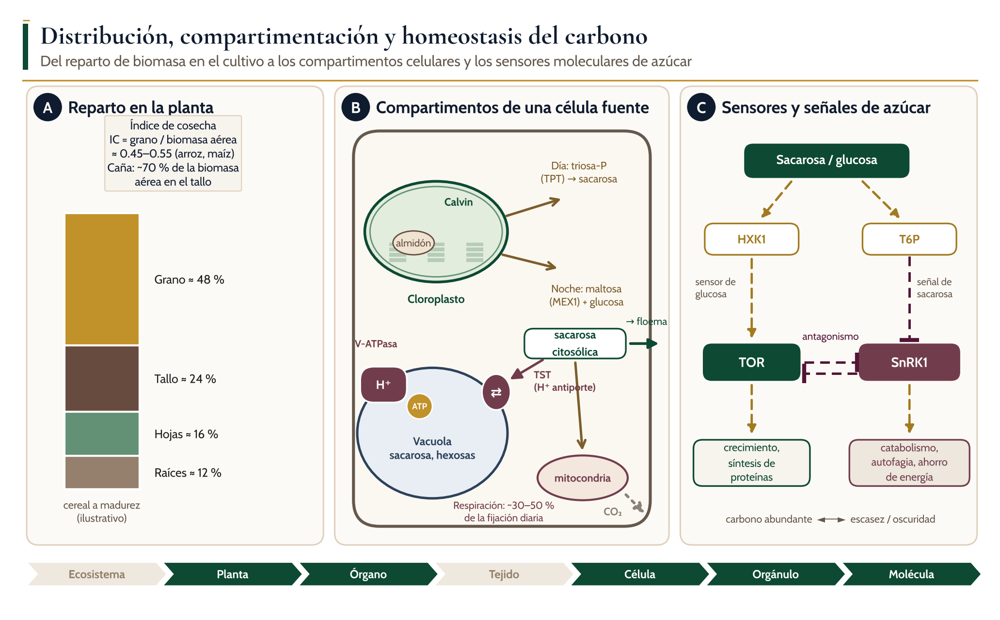
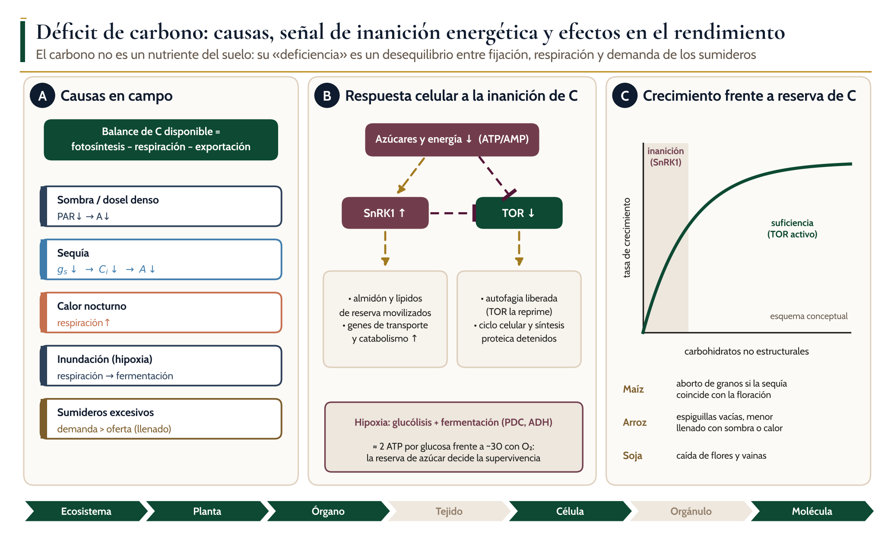
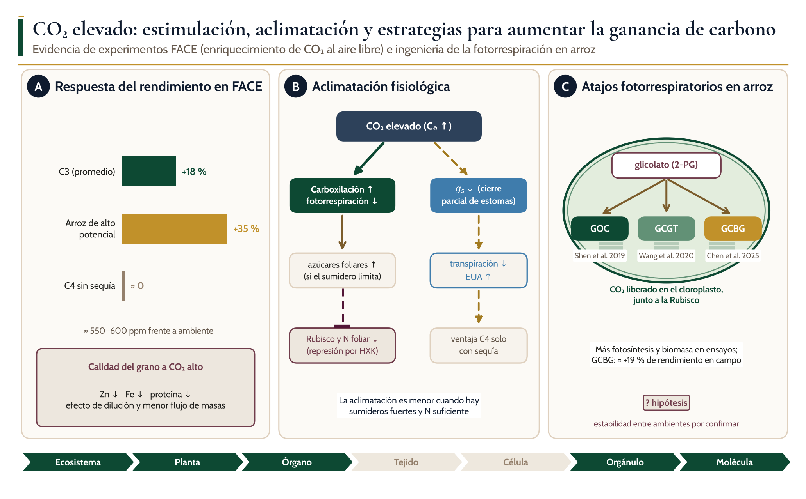

Ciclos biogeoquímicos, absorción, transporte, distribución y homeostasis del agua y los nutrientes en las plantas
C
Módulo 2. Carbono
Dr. Juan Patishtan Pérez Licenciatura avanzada, maestría y doctorado · Agosto–diciembre 2026

Introducción
Objetivos de aprendizaje
El carbono constituye cerca de 45 % de la masa seca de una planta y es el esqueleto de todas sus moléculas orgánicas. A diferencia del nitrógeno, el fósforo y el potasio, la planta no lo toma del suelo: lo obtiene de la atmósfera como CO₂ a través de los estomas y lo reduce con la energía de la luz. Por eso este módulo no trata de un «nutriente mineral» en sentido estricto, sino del flujo que alimenta a todos los demás. Cada ion que entra por un transportador acoplado a H⁺ consume ATP que procede de la respiración de azúcares; cada nódulo de soja y cada hifa micorrícica se paga con carbono fijado en la hoja.
1Cuantificar los reservorios y flujos del ciclo global del carbono y el balance antropogénico actual, e identificar el papel de los agroecosistemas como fuente o sumidero.
2Describir la difusión del CO₂ como una serie de conductancias (capa límite, estomas, mesófilo) y aplicar A = gs (Ca − Ci)/1.6.
3Comparar las vías C3, C4 y CAM en anatomía, enzimas, costo energético y respuesta a temperatura, sequía y CO₂.
4Explicar la carga y descarga del floema con los transportadores SWEET, SUT, TST y STP, y la hipótesis de flujo por presión de Münch.
5Integrar la señalización de azúcares (HXK1, T6P, SnRK1, TOR) con el crecimiento y la respuesta al estrés.
6Traducir estos mecanismos en decisiones de manejo para los cinco cultivos de referencia.
2.1 Ciclo biogeoquímico del carbono
Ciclo del carbono en un agroecosistema
Areservorios (cajas, en Pg C) y flujos naturales (Pg C año⁻¹); el grosor de la flecha de fotosíntesis indica que es el mayor flujo tierra–atmósfera. Las flechas verdes son flujos mediados por la planta, las pardas transformaciones en el suelo y las discontinuas grises pérdidas por cambio de uso de suelo.
Bbalance antropogénico de 2023 según el Global Carbon Budget 2024; las fuentes (11.1 Pg C) se reparten entre el crecimiento atmosférico y los sumideros oceánico y terrestre. Valores de reservorios redondeados de las síntesis de referencia.
2.1 Ciclo biogeoquímico del carbono
Reservorios y flujos del ciclo del carbono relevantes para la agricultura
Componente
Magnitud
Control biológico o físico
Cómo lo modifica el manejo
Atmósfera
≈ 890 Pg C (419 ppm, 2023)
Balance entre emisiones y sumideros
Emisiones de maquinaria, fertilizantes y quema de residuos
Vegetación
≈ 450–650 Pg C
Fotosíntesis y respiración autótrofa
Elección de especie, densidad, duración del cultivo
Suelo (0–1 m)
≈ 1 500 Pg C
Entrada de residuos y exudados; descomposición microbiana
Labranza, cultivos de cobertura, abonos orgánicos, riego
PPB terrestre
≈ 120 Pg C año⁻¹
Luz, CO₂, agua, N y temperatura
Índice de área foliar, nutrición, protección del cultivo
Respiración heterótrofa
≈ 55–60 Pg C año⁻¹
Temperatura, humedad, calidad del sustrato
Incorporación de residuos, drenaje, inundación del arroz
Fósiles + uso de suelo
11.1 Pg C año⁻¹ (2023)
Actividad humana
Deforestación evitada, eficiencia energética
2.1 Ciclo biogeoquímico del carbono
? Hipótesis o debate
Debate: ¿los suelos agrícolas pueden ser un sumidero duradero?
1
Las tasas de acumulación se reducen a medida que el suelo se acerca a un nuevo equilibrio (saturación), y el carbono ganado se pierde si cambia el manejo.
2
El efecto cebado de los exudados implica que más carbono radical no siempre significa más COS neto. El signo depende del tipo de exudado, del N disponible y de la comunidad microbiana.
3
Conclusión prudente: el secuestro es real pero finito y reversible; debe contabilizarse junto con las emisiones de N₂O y CH₄ del mismo sistema.
2.2 Absorción: entrada del CO₂ y fijación
? Hipótesis o debate
¿Facilitan las acuaporinas el paso del CO₂?
1
Algunas acuaporinas PIP aumentan la permeabilidad de membranas al CO₂ en sistemas heterólogos, y su expresión se correlaciona con gm en varias especies.
2
Sin embargo, la contribución relativa de la difusión por la bicapa y por PIP en membranas nativas sigue en discusión, y los mutantes no siempre muestran cambios en gm.
3
Se presenta como hipótesis en la Figura 2.2 B.
2.2 Absorción: entrada del CO₂ y fijación
Entrada de CO₂ y fijación

Aconductancias en serie desde el aire (Ca) hasta el estroma (Cc).
Bcélula del mesófilo C3; el CO₂ cruza la membrana (por la bicapa y, según la hipótesis, por acuaporinas PIP), la anhidrasa carbónica equilibra CO₂ y HCO₃⁻, la Rubisco carboxila la RuBP y la oxigenación inicia la fotorrespiración. El translocador de triosas fosfato (TPT) exporta el producto al citosol, donde se sintetiza sacarosa.
Cvía C4 tipo NADP-ME de maíz, sorgo y caña; la PEPC fija HCO₃⁻ en el mesófilo, el malato difunde por plasmodesmos a la vaina del haz y la descarboxilación concentra CO₂ alrededor de la Rubisco. La regeneración del PEP por PPDK consume el equivalente de 2 ATP.
2.2 Absorción: entrada del CO₂ y fijación
Comparación de los tipos fotosintéticos en los cultivos de referencia
Rasgo
C3 (arroz, soja)
C4 NADP-ME (maíz, sorgo, caña)
CAM (agave, piña)
Primera carboxilasa
Rubisco
PEPC (mesófilo)
PEPC (de noche)
Separación
Ninguna
Espacial: mesófilo / vaina del haz
Temporal: noche / día
Ci/Ca típico
≈ 0.7
≈ 0.4
Variable
Fotorrespiración
Alta, aumenta con la temperatura
Muy baja
Baja durante el día
Costo energético
3 ATP + 2 NADPH por CO₂
≈ 5 ATP + 2 NADPH por CO₂
Mayor que C4
Eficiencia en uso de agua y N
Menor
Mayor (menos Rubisco por unidad de A)
Muy alta en agua
Respuesta a CO₂ elevado
Fuerte estimulación
Escasa, salvo con sequía
Moderada
2.3 Transporte a corta y larga distancia
Transporte de carbono por el floema

Arelación fuente–sumidero en la planta entera; la carga de sacarosa en la hoja eleva la presión de turgencia (P) del floema y la descarga en granos, tallos y raíces la reduce, lo que genera el flujo de masas descrito por Münch; el agua del floema procede del xilema.
Bcarga apoplástica en la hoja; la sacarosa sale al apoplasto por SWEET13 (y SWEET11/12) y entra en el complejo célula acompañante–elemento criboso por el simportador SUT1 acoplado a H⁺.
Crutas de descarga en sumideros, simplástica por plasmodesmos y apoplástica con SWEET, invertasa de pared (CWIN) y transportadores de hexosas (STP).
2.3 Transporte a corta y larga distancia
Transportadores de azúcares y su función
Familia
Mecanismo
Localización
Función
Evidencia en cultivos
TPT
Antiporte triosa-P / Pi
Envoltura del cloroplasto
Exporta el producto del ciclo de Calvin de día
Conservado en todas las plantas
MEX1, pGlcT
Uniporte
Envoltura del cloroplasto
Exportan maltosa y glucosa del almidón de noche
Mutantes acumulan almidón
SWEET (clase III)
Uniporte pasivo de sacarosa
Membrana del parénquima floemático; sumideros
Salida de sacarosa al apoplasto
zmsweet13abc sin carga del floema
SUT / SUC
Simporte sacarosa/H⁺
Célula acompañante, elemento criboso
Carga activa del floema
SUT1 en maíz, arroz, caña y yuca
STP
Simporte hexosa/H⁺
Membrana de células del sumidero
Toma de hexosas tras la invertasa de pared
Llenado de granos y desarrollo del polen
TST
Antiporte azúcar/H⁺
Tonoplasto
Acumulación vacuolar de sacarosa
Tallo de caña de azúcar
2.4 Distribución, compartimentación y homeostasis
Distribución y compartimentación del carbono

Areparto ilustrativo de la biomasa de un cereal a madurez y definición del índice de cosecha.
Bcompartimentos de una célula fuente; de día las triosas fosfato salen por el TPT para formar sacarosa y el exceso se almacena como almidón, que de noche se degrada a maltosa y glucosa; la vacuola acumula sacarosa y hexosas mediante TST, energizado por la V-ATPasa, y la mitocondria respira una fracción importante del carbono fijado.
Csensores de azúcar; la hexoquinasa HXK1 detecta glucosa, el trehalosa-6-fosfato (T6P) refleja la sacarosa, y las quinasas TOR (abundancia) y SnRK1 (escasez) actúan de forma antagónica sobre el crecimiento.
2.4 Distribución, compartimentación y homeostasis
Distribución y control del carbono en cada nivel de organización
Nivel
Dónde está el carbono
Mecanismo de control
Ejemplo en cultivos
Ecosistema
Biomasa, COS, atmósfera
Entradas de residuos y exudados; respiración heterótrofa
Incorporación de rastrojo de maíz; arroz inundado
Planta
Grano, tallo, hojas, raíces
Fuerza de los sumideros; fenología
Índice de cosecha de arroz y maíz; tallo de caña
Órgano
Hoja fuente, grano o tallo sumidero
Carga y descarga del floema (SWEET, SUT)
Llenado de grano de sorgo
Célula
Almidón, sacarosa citosólica, vacuola
TPT, MEX1, TST, invertasas
Sacarosa vacuolar en caña de azúcar
Molécula
Señales de azúcar
HXK1, T6P, SnRK1, TOR
OsNAC23–T6P–SnRK1a en arroz
2.5 Funciones del carbono en la planta
Funciones del carbono y el proceso en que intervienen
Respiración: ATP para transporte de iones, síntesis y mantenimiento
Cada ion absorbido activamente consume carbono
Osmorregulación
Sacarosa, hexosas, polioles en la vacuola
Ajuste osmótico ante sequía y salinidad
Señalización
Glucosa, sacarosa, T6P; hormonas derivadas de C
Coordina floración, llenado y respuesta al estrés
Simbiosis
Carbono para nódulos, micorrizas y microbiota
Fijación de N₂ en soja; absorción de P por micorrizas
Defensa
Fenoles, terpenos, flavonoides
Resistencia a plagas; alelopatía del sorgo
2.6 Déficit, exceso y toxicidad
Déficit de carbono

Acausas en campo, ordenadas por el término del balance de carbono que afectan.
Brespuesta celular a la inanición; la caída de azúcares y de energía activa a SnRK1 e inhibe a TOR, lo que moviliza reservas, libera la autofagia y detiene el crecimiento; en hipoxia la fermentación rinde unos 2 ATP por glucosa.
Cesquema conceptual de la relación entre la reserva de carbohidratos no estructurales y la tasa de crecimiento, con ejemplos de síntomas en maíz, arroz y soja.
2.6 Déficit, exceso y toxicidad
● Mecanismo establecido
Síntomas de déficit de carbono en los cultivos de referencia
1
Maíz: aborto de granos en la punta de la mazorca cuando la sequía o la sombra coinciden con la floración y las dos semanas siguientes.
2
Arroz: espiguillas vacías y granos mal llenados con nubosidad, calor nocturno o densidades excesivas.
3
Sorgo: llenado incompleto y senescencia prematura si no tiene el rasgo stay-green.
4
Caña de azúcar: menor contenido de sacarosa (Pol) cuando el crecimiento compite con la acumulación en el tallo.
5
Soja: caída de flores y vainas y menor fijación de N₂, porque el nódulo depende de fotoasimilados.
2.6 Déficit, exceso y toxicidad
Respuestas al CO₂ elevado y estrategias para aumentar la ganancia de carbono

Arespuesta del rendimiento en experimentos FACE y efecto sobre la calidad del grano.
Bcadena de aclimatación; el aumento de la carboxilación y el cierre parcial de estomas tienen consecuencias opuestas sobre el uso de agua y la concentración de Rubisco.
Catajos fotorrespiratorios en cloroplastos de arroz (GOC, GCGT y GCBG) que liberan el CO₂ del glicolato cerca de la Rubisco; su estabilidad entre ambientes aún debe confirmarse.
Movilización de reservas, autofagia, crecimiento detenido
Carboxilación ↑, fotorrespiración ↓, gs ↓
Efecto en rendimiento
Aborto de granos, flores y vainas
+18 % promedio en C3; ≈ 0 en C4 sin sequía
Efecto en calidad
Granos chupados, menos sacarosa en caña
Menos proteína, Zn y Fe en el grano
2.7 Respuestas adaptativas y regulación
? Hipótesis o debate
Debate: ¿mejorar la fotosíntesis aumenta el rendimiento?
1
Si el rendimiento está limitado por los sumideros (número de granos), más fotosíntesis puede traducirse en más azúcar foliar y aclimatación, no en más grano.
2
Los resultados de OsNAC23 y del precursor de T6P sugieren que actuar simultáneamente sobre fuente y sumidero es más eficaz que modificar solo la Rubisco o la fotorrespiración.
3
Los atajos fotorrespiratorios se comportan de modo distinto según la temperatura y la luz; su ganancia neta en ambientes tropicales todavía no está demostrada.
2.7 Respuestas adaptativas y regulación
Estrategias frente al déficit y el exceso de carbono
Estrategia
Rasgo
Mecanismo
Evidencia
Concentrar CO₂
Vía C4, anatomía Kranz
PEPC + descarboxilación en la vaina
Maíz, sorgo, caña
Ahorro de carbono
Quiescencia ante inundación
SnRK1 y señalización de O₂ limitan el consumo
Arroz con SUB1A
Reservas móviles
Carbohidratos del tallo
Removilización al grano en el llenado
Arroz, sorgo stay-green
Señalización de azúcar
Circuito OsNAC23–T6P–SnRK1a
Mayor transporte a sumideros
+13 a 17 % de rendimiento en arroz
Reducción de pérdidas
Atajos fotorrespiratorios
CO₂ del glicolato liberado junto a la Rubisco
Arroz GOC, GCGT, GCBG
Eficiencia estomática
Respuesta rápida a la luz
Menor desfase entre apertura y fotosíntesis
Objetivo de mejoramiento
2.8 Implicaciones agronómicas
Comparación de los cinco cultivos de referencia frente al carbono
Cultivo
Vía
Sumidero principal
Riesgo de déficit de C
Manejo clave
Arroz
C3
Grano (almidón)
Nubosidad y calor nocturno en el llenado; inundación profunda
Densidad y fecha de siembra; variedades SUB1; manejo del agua
Maíz
C4 NADP-ME
Grano (almidón)
Sequía o sombra en floración: aborto de granos
Densidad óptima; riego en floración; híbridos tolerantes
Sorgo
C4 NADP-ME
Grano o tallo (dulce)
Sequía terminal
Rasgo stay-green; fecha de siembra
Caña de azúcar
C4 NADP-ME
Tallo (sacarosa vacuolar)
Crecimiento activo que compite con la maduración
Inducir maduración (déficit hídrico, temperatura); fecha de cosecha
Soja
C3
Grano (proteína y aceite); nódulos
Sombra y sequía en floración y llenado de vainas
Inoculación; espaciamiento; evitar estrés en R3–R6
2.8 Implicaciones agronómicas
▲ Para el agrónomo
Para el agrónomo: cinco decisiones que dependen del carbono
1
1. Densidad de siembra: define la intercepción de luz y el balance entre fuente y sumidero; el exceso de plantas causa sombra mutua y aborto de granos.
2
2. Protección de la floración: en maíz y soja, evitar el estrés hídrico en floración es la decisión con mayor efecto sobre el número de granos.
3
3. Elección de variedad: arroz de alto potencial y sorgo stay-green aprovechan mejor el carbono disponible.
4
4. Maduración de la caña: un déficit hídrico moderado y temperaturas frescas detienen el crecimiento y favorecen la acumulación de sacarosa.
5
5. Manejo de residuos: retener residuos aumenta el COS, pero debe acompañarse de un balance de N para evitar inmovilización y emisiones.
Cierre
Síntesis
01
El carbono entra en la planta como CO₂ atmosférico y constituye cerca de 45 % de su masa seca; su fijación es el flujo más grande entre la tierra y la atmósfera (≈ 120 Pg C año⁻¹).
02
En 2023, 11.1 Pg C de emisiones antropogénicas se repartieron entre la atmósfera (5.9), el océano (2.9) y la tierra (2.3); los suelos agrícolas pueden secuestrar carbono, pero de forma finita y reversible.
03
La difusión del CO₂ está limitada por gs y gm; la Rubisco pierde cerca de un cuarto del carbono fijado por fotorrespiración en C3, y la vía C4 de maíz, sorgo y caña concentra CO₂ con un costo de 2 ATP adicionales.
04
SWEET y SUT cargan el floema, la presión de turgencia impulsa el flujo de masas y SWEET, invertasas, STP y TST controlan la descarga y el almacenamiento.
05
HXK1, T6P, SnRK1 y TOR traducen la disponibilidad de azúcar en decisiones de crecimiento o ahorro; manipularlos ya ha aumentado el rendimiento de arroz y trigo.
06
El CO₂ elevado estimula el rendimiento de los C3 (+18 % en promedio) pero reduce la proteína, el Zn y el Fe del grano; el déficit de carbono se manifiesta como aborto de órganos reproductivos.
Autoevaluación
Preguntas de autoevaluación
1Con A = 25 µmol m⁻² s⁻¹, Ca = 420 y Ci = 290 µmol mol⁻¹, calcule gs. ¿Qué valor de Ci esperaría en maíz con la misma A?
2¿Por qué la ventaja de la vía C4 sobre la C3 aumenta con la temperatura? Relacione su respuesta con la solubilidad del O₂ y la cinética de la Rubisco.
3Prediga el fenotipo de un maíz sin SWEET13 funcionales en la hoja y en el grano. ¿Qué medición distinguiría un defecto de carga de uno de descarga?
4Explique por qué el arroz inundado agota antes sus reservas de azúcar si sigue la estrategia de escape que si sigue la de quiescencia.
5Un productor de caña quiere aumentar el COS incorporando toda la paja. Enumere dos beneficios y dos riesgos, y diga qué mediría para evaluarlos.
Fuentes verificadas
41
referencias verificadas: artículos con DOI, consultados en bases bibliográficas, y libros de texto. La lista completa, con autores, año, revista y enlace, está en el manual del módulo.